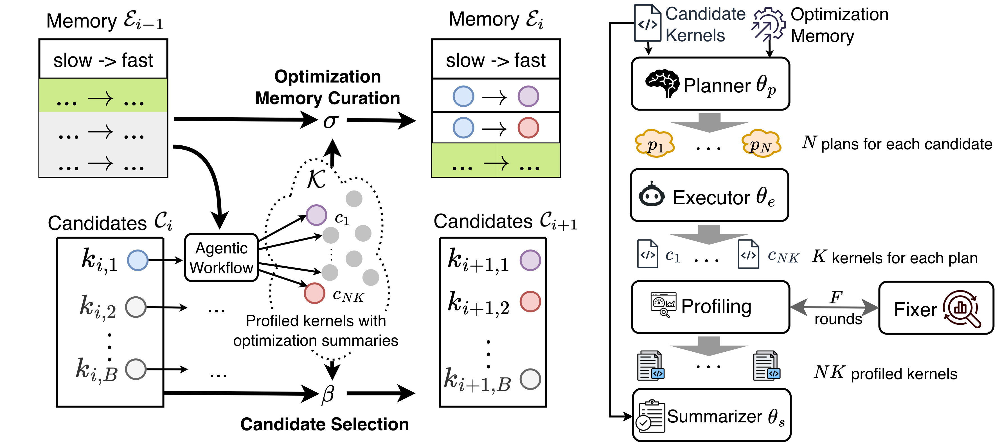

Close

AccelOpt
We are building self-improving agentic systems that ship silicon to intelligence.
Contact: Genghan Zhang (zgh23@stanford.edu)
Papers
- AccelOpt: A Self-Improving LLM Agentic System for AI Accelerator Kernel Optimization
- Adaptive Self-improvement LLM Agentic System for ML Library Development ICML 2025